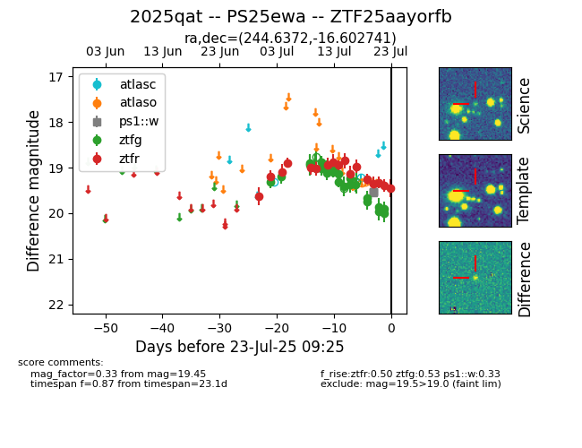

Target ZTF25aayorfb at 2025-07-23 12:37, see:
FINK: fink-portal.org/ZTF25aayorfb
Lasair: lasair-ztf.lsst.ac.uk/objects/ZTF25aayorfb
ALeRCE: alerce.online/object/ZTF25aayorfb
TNS: wis-tns.org/object/2025qat
YSE: ziggy.ucolick.org/yse/transient_detail/2025qat
alt names
ZTF25aayorfb (ztf,fink)
2025qat (tns,yse)
PS25ewa (panstarrs)
coordinates:
equatorial (ra, dec) = (244.6372,-16.60274)
galactic (l, b) = (358.0598,+23.41575)
photometry
last atlasc=19.21, atlaso=19.32, ps1::w=19.54, ztfg=19.90, ztfr=19.45
2 atlasc, 3 atlaso, 4 ps1::w, 20 ztfg, 17 ztfr detections
